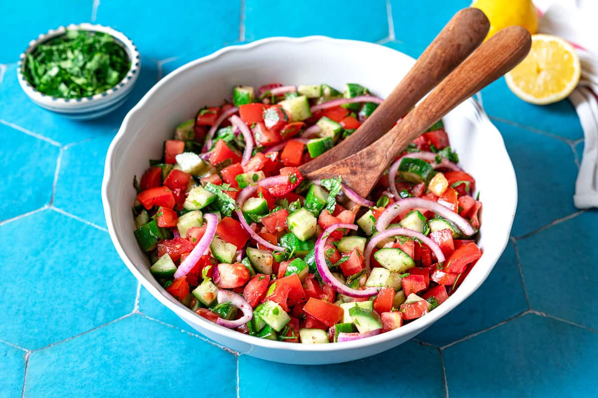

Mediterranean Cucumber Tomato Salad

An everyday cucumber and tomato salad with just a handful of ingredients and no cooking involved.
· · · Method · · ·
6Roma tomatoes, diced (about 3 cups)1large English or hot-house cucumber, diced½small red onion, thinly sliced (optional)¾ bunchparsley, leaves and tender stems chopped (about ½–¾ cup)- kosher salt, to taste
½ tspblack pepper1 tspground sumac2 tbspextra virgin olive oil2 tspfreshly squeezed lemon juice, plus more to taste
In a large mixing bowl, gently combine the tomatoes, cucumbers, red onion, and parsley. Season with kosher salt and toss. Set aside for 5 minutes or so.
Add the sumac, olive oil, and lemon juice. Give the salad a gentle toss. Taste and adjust the seasoning to your liking. Enjoy!